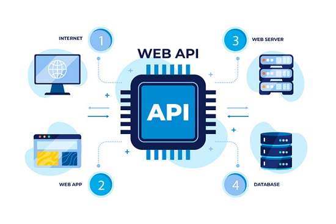

Una API (Application Programming Interface) es una interfaz de programación de aplicaciones usada en el desarrollo web y de software. Permite que las diferentes apps interactúen mediante solicitudes, respuestas y compartan datos de manera segura y eficiente. Una API incluye reglas y protocolos que ayudan a usar las funciones de una aplicación dentro de la otra. Gracias a las APIs, puedes hacer compras online, ver vídeos incrustados y usar datos GPS para crear una ruta para correr.
La API acelera el desarrollo de nuevas aplicaciones. No tienes que crear todas las soluciones de software desde cero, ya que puedes usar APIs listas para funciones estándares. Las APIs también te facilitan la integración de diferentes apps y servicios, mejorar su rendimiento y adaptarlas a las necesidades de tu público objetivo.

Tipos de APIs
Existen APIs para apps, sitios web y sistemas operativos. Por ejemplo, la mayoría de sistemas operativos (Unix, Windows, MacOS, etc.) cuentan con APIs que permiten programar servicios para estos sistemas. Las APIs se clasifican por el tipo de arquitectura:
SOAP (Simple Object Access Protocol): significa “protocolo simple de acceso a objetos”. Emplea XML para transferir datos entre sistemas y se usa comúnmente en apps empresariales.
RPC (Remote Procedure Call): o “llamada a procedimiento remoto”. El cliente solicita una acción necesaria al servidor, y como respuesta se ejecuta una función en la aplicación.
REST (Representational State Transfer): es la herramienta más popular actualmente. Este tipo de interfaz opera el protocolo HTTP para el intercambio de datos y suele ser usado en aplicaciones web.
WebSocket: habilita la comunicación bidireccional entre el cliente y el servidor, lo que le hace más interactivo el programa. La información se envía en el formato JSON.
Además, las APIs se pueden dividir por el tipo de acceso:
Internas: Se usan dentro de una empresa para optimizar los flujos de trabajo y reducir costos.
Públicas: Están disponibles para todos; se aplican para crear nuevos servicios y popularizar los que ya están.
De socios: Ayudan a optimizar y desarrollar procesos entre socios comerciales y consumidores de un producto o servicio.
Compuestas: Combinan dos o más APIs diferentes para construir sistemas más complejos.
APIs populares de terceros
Existe una gran variedad de APIs de terceros, algunas de las más populares de las que querrás hacer uso en algún momento son:
La API de Twitter, que te permite hacer cosas como mostrar tus últimos tweets en tu sitio web.
La API de Google Maps permite hacer todo tipo de cosas con mapas en tus páginas web (incluso hace funcionar Google Maps). Actualmente, existe todo un conjunto de APIs que te permiten realizar una gran variedad de tareas, como se puede ver en Google Maps API Picker.
El conjunto de APIs de Facebook te permite usar partes del ecosistema de Facebook para mejorar tu aplicación, por ejemplo aportando la posibilidad de identificación mediante el login de Facebook, aceptar pagos en la aplicación, desplegar campañas de anuncios para un target concreto, etc.
La YouTube API, que te permite integrar videos de YouTube en tu sitio, buscar en YouTube, construir listas de reproducción y más.
La Twilio API, que provee de un framework para crear la funcionalidad de llamadas y videollamadas en tus aplicaciones, enviar SMS o MMS y más.
Si te interesa el tema, a continuación se muestra un video con una expliación más interactiva